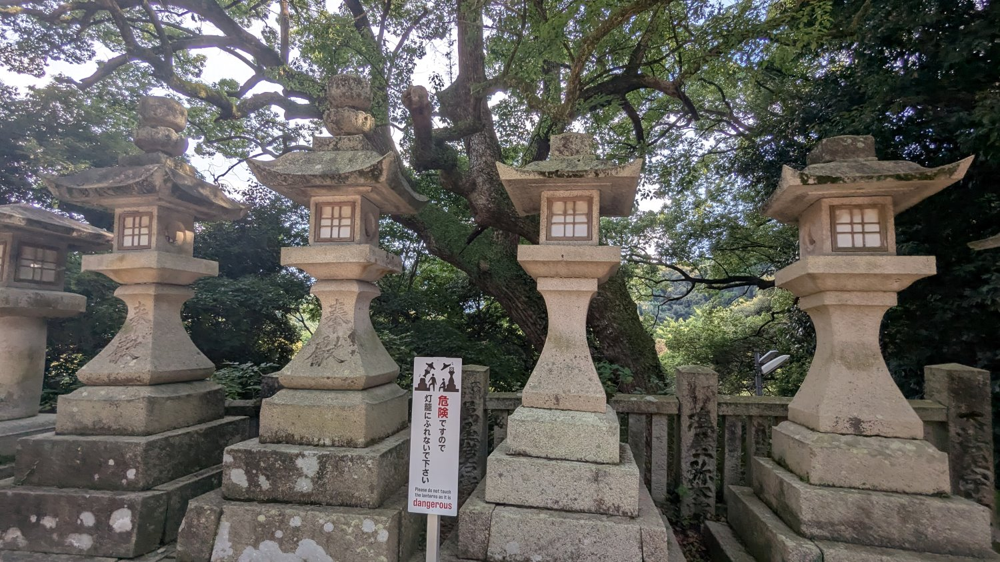
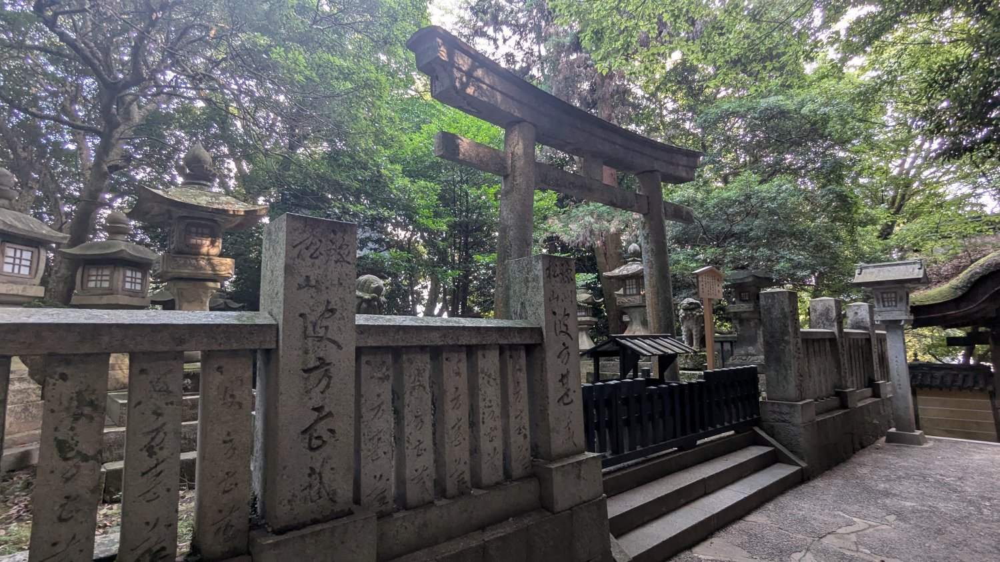

金刀比羅宮
Kotohiragu
被譽為一生一定要來參拜一次的神社，參拜步道總共有1,368級石階，登上最頂端的本宮之後可以俯瞰遼闊的平原景觀，這樣的壯麗景色讓人覺得一切辛苦都非常值得。
連日以來的炎熱天氣讓我們每天都處於快要中暑的狀態，再加上老婆大人前幾天不小心跌倒，膝蓋受傷，不太可能爬那麼多階梯，因此直接開車到中段的神椿咖啡廳停車場(資生堂設計並營運)。

從停車場走進參道，首先遇到的是位於第595皆的「祓戸社・火雷社」，這裡祭祀的是罪穢拔除之神以及鎮火、消防之神。
1 / 3

參道景色
從中段參道往後看可以看到連綿不絕的階梯

參道景色
參道旁有很多石燈籠
參道景色
快要看到旭社了
沿著參道階梯繼續往上爬，雖然沒有爬很多層，但天氣熱還是挺吃力的。

旭社位於628階的位置，它是金刀比羅宮境內最大的建築物，以銅瓦葺皮、二層入母屋造的建築物，殿內四週裝飾著許多美麗的雕刻圖案。
1 / 4

參道景色
參道穿梭於山林中，顯得非常優美

參道景色
參道沿路上有許多大大小小的鳥居
參道景色
參道一隅
參道景色
陽光從樹林間投射進參道，看起來非常壯觀美麗
到達旭社後原本想休息回頭了，但看了一下地圖發現在上望爬一點點階梯可以到達另一棟大建築物"御本宮"，於是繼續沿著參道再往上爬。

終於到達位於785階的「御本宮」，這裡供奉著保佑產業復興、海上平安的「讚岐金毘羅神」，我們在這裡稍作參拜後，便返回停車場，結束金刀比羅宮的朝聖行程。
景點資訊
- 店名： 金刀比羅宮
- 地址： 香川県仲多度郡琴平町892-1
- 電話： 0877-75-2121
留言板